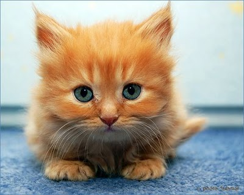

Probably you`re looking for a very BIG CAT, isn`t?
For the rest we have good news!
Here is the best of the best among red cats and not only. Ladies & Gentelmen! Here is Little Monster! Oops! Google is joking! lol
The real black cats look like ones on images:He exists.
We have some special video about sad cat. Poor kitty (((